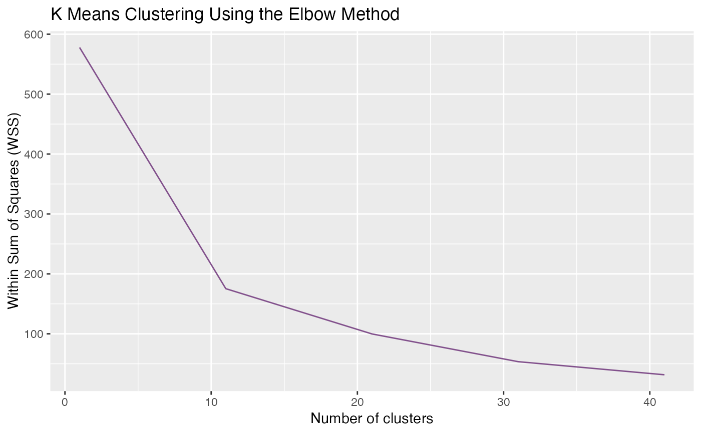

gPathway
gPathway.RdThis function append the cluster information and the detailed feature ID to the pathway dataset.
Arguments
- pathway
A data frame. The columns must include "ID", "taxonomic.scope", and "Pathaway".
- a
The output of
pre_process()- b
The output of
gClusters()
Examples
data("FuncExample")
head(a)
#> ID Day_1 Day_2 Day_3 Day_4 Day_5
#> 105494 grp1_123656 1.16324449 1.363903662 1.3037049 0.70082791 0.2386620
#> 101572 grp1_118996 2.22195307 0.921244789 -0.6520548 -0.47274459 0.7920261
#> 122928 grp1_144232 2.21925785 -1.355860458 -0.5660429 -0.09238685 0.5524392
#> 65357 grp1_76657 1.66012361 -0.199676781 -0.9443640 0.39394648 1.6731019
#> 112264 grp1_131716 -1.93475260 -1.747281361 -0.5416194 0.06701984 0.5028177
#> 49395 grp1_58305 0.07723733 -0.003775164 1.6222273 -1.35291009 -1.2707773
#> Day_6 Day_7 Day_8 Day_9 Day_10 Day_11
#> 105494 -0.51320765 -0.4941146 -1.1619763 -1.0444529 -1.2134812 -0.34311029
#> 101572 -1.26690762 -0.4369331 0.2967952 -0.3799502 -0.9511152 -0.07231373
#> 122928 0.16510415 0.8255533 -0.8108334 0.0613068 0.1064795 -1.10501724
#> 65357 -0.09385111 0.1260783 -0.2575994 -0.1881348 -0.4223389 -1.74728521
#> 112264 0.63638291 0.8979775 0.7072291 0.8780265 0.1489132 0.38528667
#> 49395 0.14045162 0.3075112 0.2880033 0.7235652 -1.5017100 0.97017677
#> type
#> 105494 Peptide
#> 101572 Peptide
#> 122928 Peptide
#> 65357 Peptide
#> 112264 Peptide
#> 49395 Peptide
head(b)
#> [[1]]
#> K-means clustering with 12 clusters of sizes 2, 2, 5, 9, 6, 4, 3, 6, 5, 6, 8, 4
#>
#> Cluster means:
#> Day_1 Day_2 Day_3 Day_4 Day_5 Day_6
#> 1 -0.25028874 -0.45619045 -0.29601680 -0.104137683 1.321931956 1.79748627
#> 2 -0.37699214 1.33033297 -1.92081979 0.665597202 0.329851161 0.06555344
#> 3 0.31715268 0.69670040 0.79309246 -0.902562701 -1.049276534 -1.38959493
#> 4 2.20618497 0.05762616 -1.13832534 -0.096069621 0.518886031 -0.35589434
#> 5 0.88359919 -0.03544521 0.02011869 -0.320775832 -0.883273031 -0.22150286
#> 6 -1.94655081 -0.24312267 -0.01822866 0.596548237 -0.486701148 0.14513119
#> 7 -1.44062756 -0.27315129 0.44490872 -0.868045241 -0.903060781 0.57756397
#> 8 -2.30715157 -0.64078300 0.03743635 0.452349624 0.655069375 0.83496628
#> 9 -0.98810892 1.20945802 1.20441394 0.123887110 -0.639333646 -0.81184039
#> 10 1.13694831 1.05590791 1.23004461 0.587451756 0.094557653 -0.57501731
#> 11 -1.80529942 -1.35816893 -0.49426327 -0.002031561 0.391326169 0.33839173
#> 12 -0.08294785 -1.36536227 -1.16237329 -0.528145856 0.007546751 0.46731512
#> Day_7 Day_8 Day_9 Day_10 Day_11
#> 1 0.19960969 -0.59934632 -0.8953440 -0.75689501 0.03919111
#> 2 0.26753029 0.22369547 -0.3442099 0.63699172 -0.87753047
#> 3 0.23253992 0.13100239 0.4351899 0.89704371 -0.16128731
#> 4 0.09402502 -0.38996092 -0.3160022 -0.23890753 -0.34156219
#> 5 -0.12716911 -0.24743898 -0.1884655 -0.61084854 1.73120121
#> 6 0.12766816 -0.06395043 0.3078814 -0.39722370 1.97854842
#> 7 0.05740292 0.93620639 0.4623522 1.31871028 -0.31225955
#> 8 0.32238706 0.35324544 0.4712026 0.03757368 -0.21629589
#> 9 -0.33179745 -0.80960509 -0.3277603 -0.01047788 1.38116464
#> 10 -0.34606663 -1.05054028 -0.7473687 -1.07214204 -0.31377531
#> 11 0.47268012 0.31689137 0.5543098 0.46750804 1.11865594
#> 12 -0.07131622 0.26389511 0.2168821 0.37595600 1.87855038
#>
#> Clustering vector:
#> 105494 101572 122928 65357 112264 49395 48371 137473 20907 37886 65674
#> 10 4 4 4 11 5 9 9 7 1 4
#> 132966 22217 118478 135439 23916 7033 68330 12399 28191 113 119
#> 3 2 3 4 10 2 5 9 11 7 4
#> 48 88 120 46 110 135 20 21 58 25 38
#> 11 8 8 7 6 10 4 10 6 12 3
#> 3 84 16 85 66 87 6 146 243 121 197
#> 8 4 1 12 3 3 8 10 10 11 5
#> 29 331 13 280 282 144 297 244 346 203 53
#> 12 8 5 11 11 5 11 9 12 11 8
#> 180 235 161 273 169
#> 6 9 5 4 6
#>
#> Within cluster sum of squares by cluster:
#> [1] 5.754375 4.853026 19.235623 26.946004 28.814092 5.400271 8.458157
#> [8] 14.611195 11.231782 14.188867 18.266119 9.953426
#> (between_SS / total_SS = 71.0 %)
#>
#> Available components:
#>
#> [1] "cluster" "centers" "totss" "withinss" "tot.withinss"
#> [6] "betweenss" "size" "iter" "ifault"
#>
#> [[2]]

#>
ptw<- gPathway(pathway,a,b)
head(ptw)
#> ID cluster taxonomic.scope ko_term Pathaway
#> 1 grp1_118996 Group_4 <NA> <NA> <NA>
#> 2 grp1_123656 Group_10 Bacteria K09476 02020_Two-component_system
#> 3 grp1_131716 Group_11 <NA> <NA> <NA>
#> 4 grp1_139003 Group_3 <NA> <NA> <NA>
#> 5 grp1_144232 Group_4 <NA> <NA> <NA>
#> 6 grp1_14673 Group_9 Fungi K01648 00020_Citrate_cycle_(TCA_cycle)_